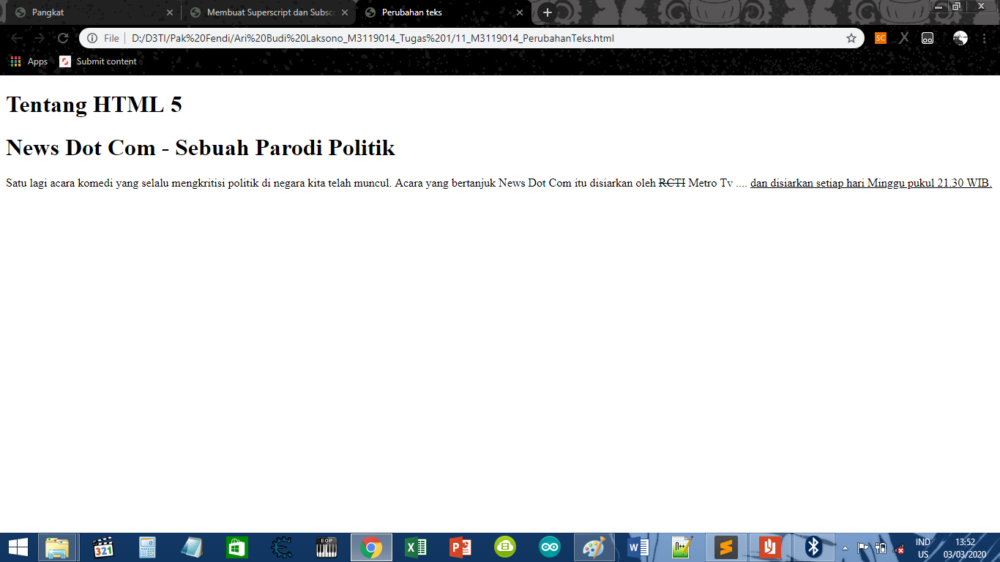

Menandai Perubahan Teks
KODE PROGRAM
<!DOCTYPE html>
<html>
<head>
<meta charset-"UTF-8">
<title>Perubahan teks</title>
</head>
<body>
<h1>Tentang HTML 5</h1>
<h1>News Dot Com - Sebuah Parodi Politik</h1>
<p>
Satu lagi acara komedi yang selalu mengkritisi politik di negara kita telah muncul. Acara
yang bertanjuk News Dot Com itu disiarkan oleh <del>RCTI</del> Metro Tv ....
<ins>dan disiarkan setiap hari Minggu pukul 21.30 WIB.</ins>
</p>
</body>
</html>
HASIL PROGRAM
Tentang HTML 5
News Dot Com - Sebuah Parodi Politik
Satu lagi acara komedi yang selalu mengkritisi politik di negara kita telah muncul. Acara
yang bertanjuk News Dot Com itu disiarkan oleh RCTI Metro Tv ....
dan disiarkan setiap hari Minggu pukul 21.30 WIB.
SCREENSHOT

KESIMPULAN
Dari koding di atas, Dapat disimpulkan bahwa Dalam HTML ada 2 jenis tanda perubahan teks yaitu.
tanda untuk sisipan teks baru tanda untuk teks yang telah dihapus.
Kembali Ke Halaman Utama